Den Bleke Jegeren
På visse netter streifer Den Bleke Jegeren (The Pale Hunter) gjennom Storskogen (Great Wood) Storskogen med sine spøkelseshunder. Når han gjør det, blir selv de modigste jegerne hjemme i bygda. Skog- folket (Forest Folk) Skogfolket omtalte ham som noe nær en naturkraft, mindre en gud å tilbe enn en storm å holde ut.
Historiene spriker når det gjelder hva som skjer om du krysser Jegerens vei. Han kan overse deg, kalle deg til å bli med ham, eller merke deg som byttet sitt. Men alle historiene er enige om dette: imponerer du ham, blir du rikelig belønnet. Blir du tatt, eller svikter du i din del – vel, det er best å ikke tenke på.
Kroker
- Noen er fortsatt ute i Skogen, men Den Bleke Jegeren streifer i natt!
- Den Bleke Jegeren sies å bære en artefakt spillerpersonene vil ha eller trenger.
- Spillerpersonene vil redde en sjel som jegeren holder bundet.
- Spillerpersonene møter en reisende som i hemmelighet er udød. Jegeren har fått teften av ham.
Overlevering
Den Bleke Jegeren setter pris på verdig bytte og verdig selskap: de raske, de kløktige, de modige. Men han jakter alltid på noe når han streifer gjennom Skogen, selv om det er under hans verdighet. Det vet alle.
Noe interessant: Han lar alt annet bytte være for å jakte på de udøde, og forfølger dem til og med utenfor Storskogen og på netter da han ellers ikke ville streifet.
Noe nyttig: For å sette Jegeren på sporet av et udødt vesen, skaff en gjenstand som bærer åndeteften dets. Brenn den en månelys natt, i et røykfylt bål av nyskårne sedergreiner.
Spørsmål
Ifølge historien(e) du har hørt …
- Hva er han? Ånd, spøkelse, eller hva?
- Hvordan er han knyttet til månen?
- Hva er egentlig hundene hans?
- Hva er forholdet hans til Kråkenes Frue (Lady of Crows) Døden og de udøde?
- Hvilken helt vant respekten hans, og hvordan? Hvilken belønning fikk de?
- Hvilken grufull skjebne rammet helten som våget å stå imot ham?
- Hvilke skikker Guder og religion brukte Skogfolket for å blidgjøre ham?
Og også …
- Hvilke historier forteller de om ham i Myrkant (Marshedge) Myrkant? Eller blant manmarcherne Nord-Manmarch?
- Hvem kom aldri hjem, og sies å ha krysset veien hans?
- Hvem påstår å ha sett ham? Når og hvor? Hva skjedde? Hva gjorde dem (deg?) så rystet?
På visse netter …
Når streifer Den Bleke Jegeren? Velg 1 sammen med spillerne:
- Når månen står høyt og er full
- Når det er nymåne og månen er borte
- På netter med måneformørkelse
- På månelyse netter om vinteren
- På måneløse netter om sommeren
- Ved hver årstids første fullmåne
- Noen andre netter dere blir enige om Hvorfor er disse nettene spesielle? Hvorfor streifer han gjennom Skogen da?
Er spillerpersonene i Storskogen en slik natt, velg eller slå for Den Bleke Jegerens bytte:
| 1-2 | Ingenting … ennå. |
|---|---|
| 3-4 | Ussel fangst: en rev/kanin/villsvin/hjort, crinwin, en tosk som krysset veien hans osv. |
| 5 | Verdig bytte: en ceirwmawr, en raselbaedd, en dyrevokter, en fae han har inngått et veddemål med osv. |
| 6 | Udødt bytte: et spøkelse eller en gjenganger, tatt ute i det åpne, langt fra noen dooltrær. |
Når tiden er inne, pek på en truende fare (hornet hans gjaller, hundene hans hyler, byttet hans farer forbi). Tilby en mulighet (til å løpe, gjemme seg, oppsøke ham osv.). Varsle trøbbel (tåken stiger, hundene hans dukker opp).
Krysser spillerpersonene Jegerens vei, avhenger det som skjer videre av hva han jakter på nå, om de gjemmer seg eller møter ham, hvordan de oppfører seg, om det er udøde blant dem, og terningenes lunefulle innfall.
Farer

Den Bleke JegerenHP 26; Rustning 4 (motstandskraft)
Skade sølvspyd m/fordel (tett, rekkevidde, kastevåpen, kraftfull, blodig, 2 gjennomborende) eller sølvgevir m/fordel (tett, kraftfull) eller grep m/fordel (hånd, gripende, kraftfull)
Særlige egenskaper omgitt av tåke; kan gripe/holde fast udøde ånder; skarpe sanser; overnaturlige reflekser
Instinkt å fryde seg over jakten, å ta udøde sjeler
- Utføre en kraftprestasjon
- Oppløses i tåke, ta form igjen
- Kalle spydet sitt til hånden
- Tilkalle flere hunder
- Ta en død eller døende sjel
En ruvende skikkelse med gevir, lysende hvit, med ansiktet i skygge. Spydet hans er langt og rett, med en halvmåne av sølv på spissen.
Han er drapert i trofeer fra tidligere jakter, som klirrer illevarslende eller er merkelig tause, alt etter hva han trenger.
Tips: Må du snakke, snakk lavt. Langsomt. Så vidt over en hvisking. Med hyppige pauser. Og uten følelser.
Når du gjør skade på Den Bleke Jegeren som han kunne unngått eller dempet, slå med ulempe.
Den Bleke Jegerens sanne natur er opp til deg å bestemme, men kanskje er han …
- inkarnasjonen Urkrefter av et urgammelt vesen av sykluser og månen;
- en villmarkas ånd Villmarkas ånder;
- spøkelset Døden og de udøde etter en Grønn Herre De Grønne Herrene som jakter i all evighet;
- en mektig fae Fae;
- en av Skogfolket Skogfolket, opphøyet og forbannet;
- en variant av det ovenstående; eller
- noe helt annet.
Juster Jegerens statblokk så den gjenspeiler naturen hans. En inkarnasjon av sykluser og månen kan være urgammel, med et trekk som «Forutse handlingene deres». Spøkelset etter en Grønn Herre ville hatt merkelappene ånd og udød, et bånd et sted i Skogen, og 0 Rustning mot sølv.
 Spøkelseshunder
Spøkelseshunder
HP 10; Rustning 1 (mangler organer), skades bare av salt eller mens den biter
Skade bitt m/fordel (hånd, gripende)
Særlige egenskaper bundet til Jegeren; kan bare streife ~1,5 km fra ham
Instinkt å sette etter
- Vise seg i en skikkelse av tåke
- Snuse opp bytte, eller de døde
- Tilkalle flokken og Jegeren
- Jage, omringe, rive ned
Et snes eller så av disse ville, hvite hundene følger ham en hvilken som helst natt. Men det finnes flere. Så mange, mange flere.
Er de udøde sjeler han har tatt, sårbare for sølv? Fae-hunder, som skades av jern? Uttrykk for en urgammel drift? Alt det er opp til deg.
 Jaktens Kall
Jaktens Kall
Når Den Bleke Jegeren farer forbi, sitrer sjelen din ved lyden av hornet hans og hundenes hyl – merk XP hvis du blir med på jakten.
Hvis du ikke blir med på jakten eller Jegeren støter deg ut, blir instinktet ditt «Tvil: Å vike unna fare, å tvile på deg selv», og du kan ikke Brenne Klart.
Begge deler varer til du lykkes med en dristig og dumdristig handling.
Jegerens gunst
Den Bleke Jegeren ønsker selskap velkommen, men forventer at de holder følge og gjør sin del. Start følgende. Hold styr på de dystre varslene separat for hver spillerperson.
Når en spillerperson imponerer Den Bleke Jegeren, fjern alle merker de har samlet opp.
bytte på flukt
Forfølgelse
Når Den Bleke Jegeren merker spillerpersonene som bytte, gir han dem et forsprang. Vent litt, og start så følgende.
Splitter spillerpersonene seg, hold styr på de dystre varslene separat for hver.
Tatt
Når du er på 0 HP og Den Bleke Jegeren tar et trofé fra deg, tar Jegeren sjelen din. Hva gjør han med den?
Kanskje han …
- overgir deg til Kråkenes Frue og den Siste Døren;
- legger deg til rekkene av hundene sine;
- fortærer essensen din i sølvild; eller
- gjør noe forskjellig med hver.
Hvis du slipper unna klørne hans, må du gå gjennom den Siste Døren nå eller bli værende i verden (få innstikket Spøkelse).
Å lede jakten
Den Bleke Jegeren og hundene hans er utrettelige og ubønnhørlige. For å overleve må byttet holde ut til soloppgang eller nå kanten av Storskogen.
Led jakten som en rekke scener og utfordringer. Er du usikker på hva slags scene eller utfordring du skal legge frem, be en spiller slå Skjebneterningen, og legg til 1 for hvert påfølgende slag (kumulativt).
| 1 | En åpen strekning, en spurt |
|---|---|
| 2 | Et valg mellom stier: én lengre, én mer risikabel |
| 3 | En hindring, risiko eller et monster |
| 4 | Et tungt slit |
| 5 | Én side deler seg, kanskje for å omgå/lure/fange den andre |
| 6 | Et godt gjemmested |
| 7 | Et pusterom, mens Jegeren og hundene hans finner sporet |
| 8 | Er man del av jakten, er byttet innen syns-/rekkevidde; er man byttet, et sted jegeren ikke kan/vil gå |
| 9 | Er man del av jakten, en sjanse til nåde, til å la byttet gå; er man byttet, en sjanse til å smette unna eller overrumple Jegeren |
| 10 | Et siste vilt løp før daggry eller mot kanten av Skogen |
Skift terreng Storskogen med hver scene eller utfordring.
Å unnslippe Jegeren
Noen knep som kan virke er …
- å dra et sted han ikke følger etter (se nedenfor);
- å krysse rennende vann for å villede hundene hans;
- å skjule lukten sin med moskusurt eller en annen sterktluktende plante;
- å distrahere ham med et spøkelse, eller noe som ser ut som et;
- å lede ham i veien for en stor skapning som vokter reviret sitt – som en hagr Storskogen eller cynddaraig Storskogen – noe som kan sinke ham;
- å få hjelp fra en fae Fae eller en villmarkas ånd Villmarkas ånder; eller
- å bruke magi til å fange, verne seg mot eller gjemme seg for ham og hundene hans.
Steder han ikke følger etter
Jegerens bytte kan finne tilflukt …
- nær dooltrær Døden og de udøde, som han ser ut til ikke å kunne nærme seg;
- på visse steder merket med Skogfolkets tegn Skogfolket;
- i en av de røde lundene Røde Lunder, kanskje, avhengig av Jegerens sanne natur;
- gjennom en veistein Veisteiner, kanskje, på Fae-stiene;
- i huler eller andre steder som er for små til at Jegeren kommer inn (selv om hundene hans sannsynligvis gjør det); eller
- nær et sterkt fordervet sted Tingene Der Nede.
Mange av disse stedene har egne farer, og Jegeren er tålmodig og kløktig. Han omringer dem, venter og/eller prøver å jage dem ut, alt etter hva som gir mening.
Spesielt trekk
Push On!
Når du prøver å holde følge med eller holde deg foran Jegeren og hundene hans, og du bærer en normal eller lett bør, slå +CON: på 10+ klarer du det, og får til og med et øyeblikk til å tenke, hente pusten eller hjelpe en allierte; på 7-9 holder du det gående, men velg 1:
- Du blir utmattet; merk en svakhet
- Gå ned til lett bør, eller slipp ◇ hvis børen din allerede er lett
- Du taper terreng eller Jegerens gunst; be spillederen rykke nærmere den truende undergangen
- Du trenger hjelp fra en allierte
På 6-, eller hvis du bærer tung bør: velg 1 av de ovenstående og spør spillederen hva mer som går galt, eller hvilken ny utfordring du nå står overfor.
Merk: Trekkene Hjemme i Villmarka og Banebryter (fra Villmarkingens playbook) gjelder også for dette trekket.
Belønninger
Den Bleke Jegeren belønner dem som blir med og imponerer ham, og byttedyr som klarer å unnslippe. Belønningen kan være:
- Et tegn på hans gunst, som Kråkenes Frue Døden og de udøde tar imot i stedet for en sjel
- Et av hans mange trofeer (og kanskje sjelen det binder)
- En artefakt eller et arkanum, noe som kan bæres, skjult på ham
- Hans velsignelse over klingen(e) deres, som nå skader udøde som om de var av sølv
- Et ærlig svar
- Et sølvskinnende horn (nedenfor)
Sølvskinnende horn
Når du blåser i hornet utendørs, om natten, i nærværet av udøde, smuldrer hornet opp og en tåke stiger. De udøde flykter, og Den Bleke Jegeren og hundene hans dukker snart opp for å jage dem.
De dødes jeger
Hvorfor jakter han på de døde? Kanskje …
- er de det verdigste byttet;
- ligger det i hans natur;
- skylder han Kråkenes Frue en tiende;
- søker han hevn over dem;
- en variant av det ovenstående; eller
- noe helt annet.
Uansett: han jager udøde ut over Storskogen, og fanger noen ganger teften av dem selv når han ikke streifer i verden. Han dukker da opp netter senere og forfølger dem til daggry. Overlever et slikt bytte, er den eneste belønningen at det har fått Jegeren bort fra sporet.